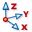
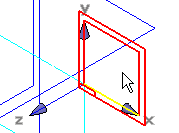
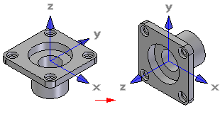

Coordinate System command (ordered)
The Coordinate System command

creates a custom coordinate system in the ordered environment. This allows you to manipulate data relative to a coordinate system other than the base coordinate system. You can define a coordinate system relative to another coordinate system or to model geometry.Coordinate systems defined relative to model geometry are associative to the model geometry. For example, if you define a coordinate system such that its origin is aligned with a hole on the model, and you modify the dimension controlling the hole location, the coordinate system also changes location.
In the Assembly environment, you can also use a coordinate system to position parts in the assembly.
Using a custom coordinate system
The coordinate system can serve many functions. It can be used as an alternate frame of reference for constructing sketches, or the origin of the coordinate system can be used for input just like keypoints. For example, you can define a new reference plane by selecting the plane inferred by the XY axes of a coordinate system.

You can measure distances relative to a coordinate system with the Measure Distance and Measure Minimum Distance commands.
You can use a coordinate system to move and rotate part copies. For example, you can place a coordinate system, then use the Part Copy command to place a part copy. You can specify that the part copy is attached to the coordinate system using the Part Copy Parameters dialog box. You can then edit the origin or orientation of the coordinate system to move or rotate both the coordinate system and the part copy.

How do I
Create a coordinate system (synchronous)Create a coordinate system (ordered)
Learn more
Working with coordinate systemsLook up more details
Coordinate System command (synchronous)Coordinate System command bar (synchronous)
Coordinate System command bar (ordered)
Coordinate System Options dialog box